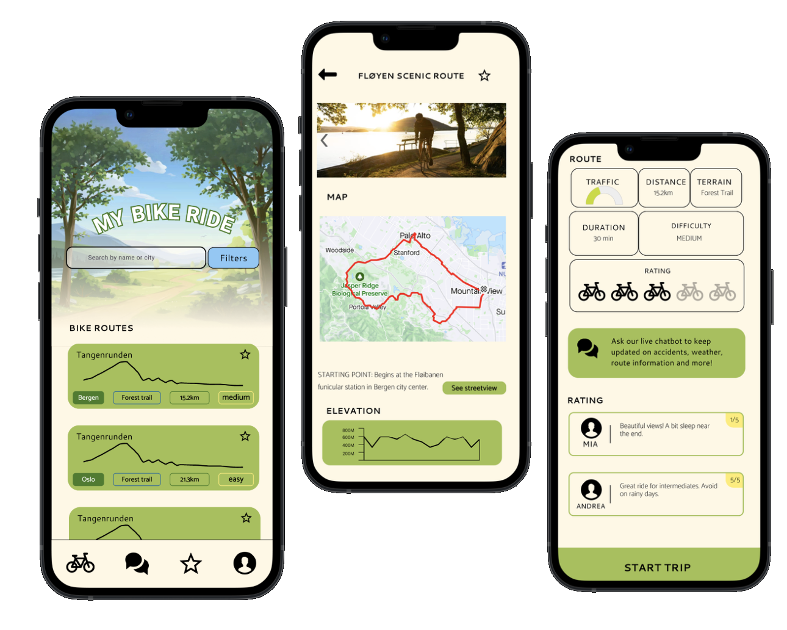
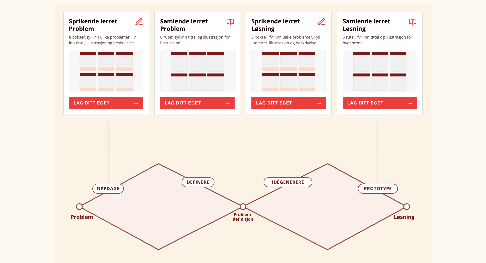
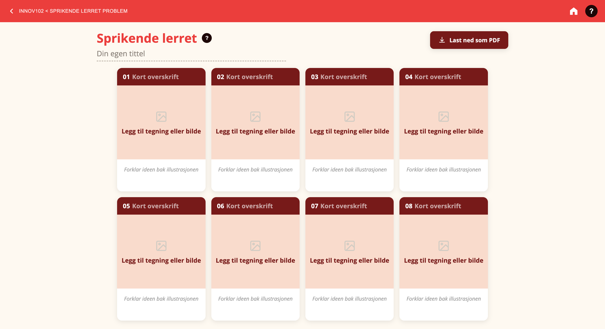
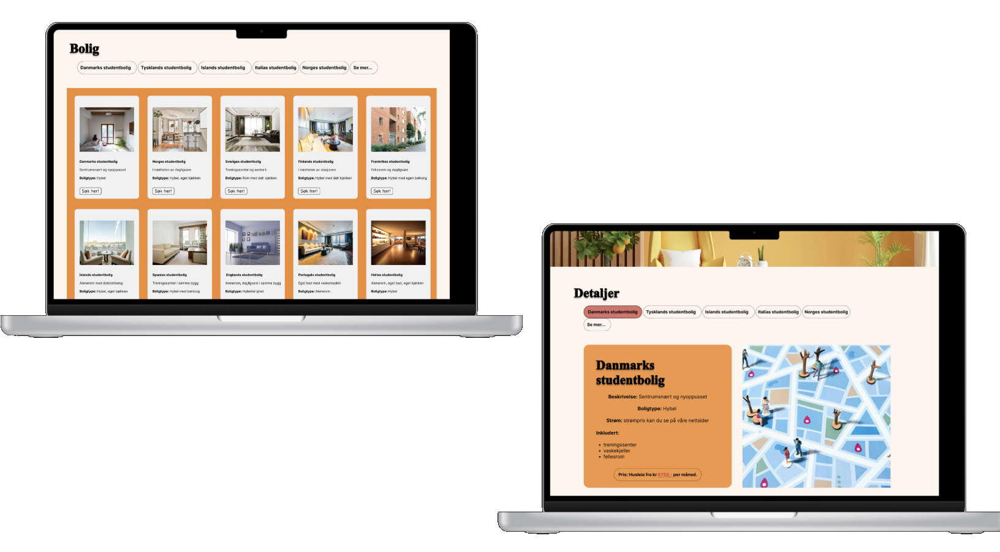
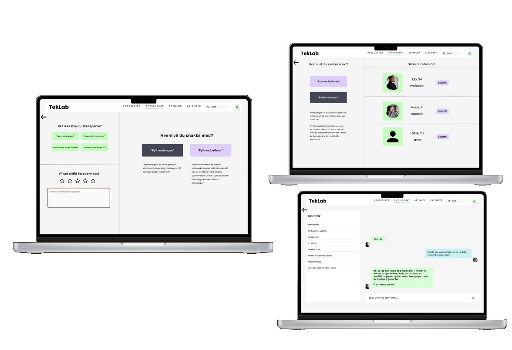
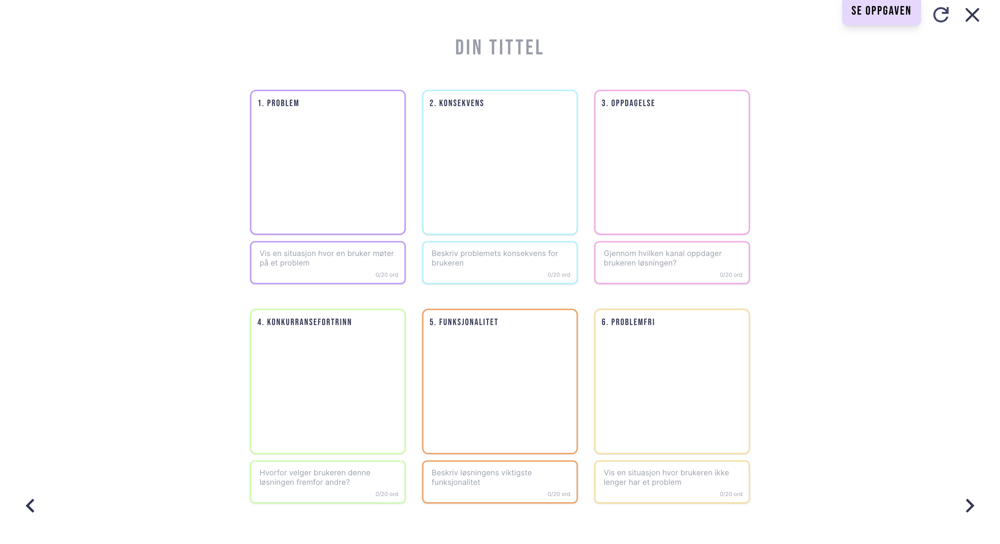
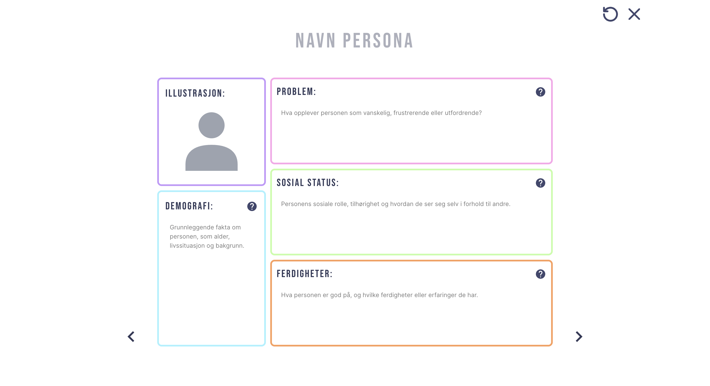

Prosjekter
En blanding av appdesign og interaktive designverktøy. Klikk deg inn på de live prototypene der det er tilgjengelig.

My Bike Ride
Et mobilappkonsept for å oppdage og planlegge sykkelruter. Inkluderer en søkbar ruteliste, detaljerte rutesider med kart og høydeprofiler, samt en turskjerm med sanntidsforhold, vurderinger og en innebygd chat-assistent.


Design Thinking Canvas-verktøy
Et interaktivt verktøy bygget rundt Double Diamond-designprosessen: Oppdage, Definere, Idégenerere, Prototype. Brukere jobber seg gjennom "sprikende" og "samlende" storyboard-lerret, tegner direkte inne i hver boks med en innebygd tegneeditor, og eksporterer det ferdige lerretet som PDF.

Bolig for Studenter
En nettplattform for studenter som søker bolig i utlandet. Brukere blar gjennom annonser etter land, sammenligner alternativer raskt, og åpner detaljerte annonsesider med pris, inkluderte fasiliteter og et interaktivt kart over nærområdet. Bygget individuelt med JavaScript, HTML og CSS.

Pythonchat (TekLab)
En chat-funksjon for en kodeopplæringsplattform, hvor brukere kan velge mellom to AI-personas tilpasset Python-hjelp, eller koble seg til ekte studenter og fagpersoner innen feltet. Inkluderer et panel med aktive brukere og full chattehistorikk i sidepanelet.

Lean Canvas-verktøy
En interaktiv app som veileder brukere steg for steg gjennom å bygge sin egen personlige Lean Canvas, med redigerbare eksempelkort og nedlastbar output, designet for å gjøre et tett business-planleggingsrammeverk tilgjengelig for førstegangsbrukere.

Rethinking Storyboard
En interaktiv plattform som lar studenter bygge storyboard med seks bokser: problem, konsekvens, oppdagelse, konkurransefortrinn, funksjonalitet og problemfri, og deretter laste ned det ferdige storyboardet som PDF til presentasjoner eller kursarbeid.

Personabygger
Et verktøy for å lage og tilpasse brukerpersonas, med redigerbare felt, øvingsoppgaver for å lære rammeverket, bildeopplasting for hver persona, og nedlastbare resultater til å dele med et team.